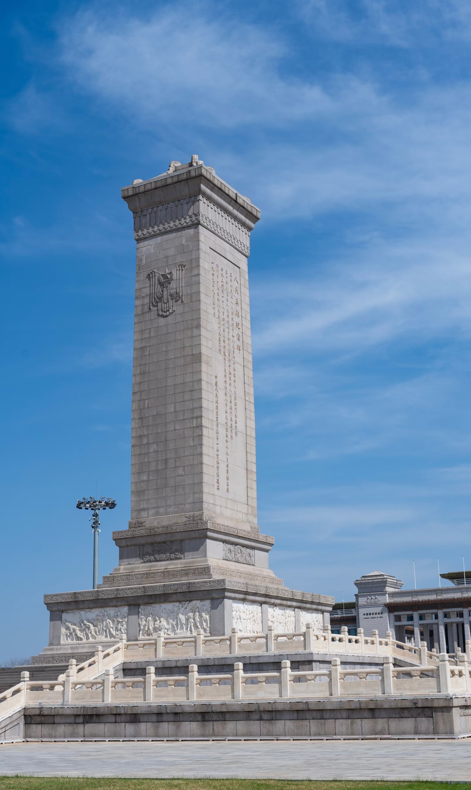
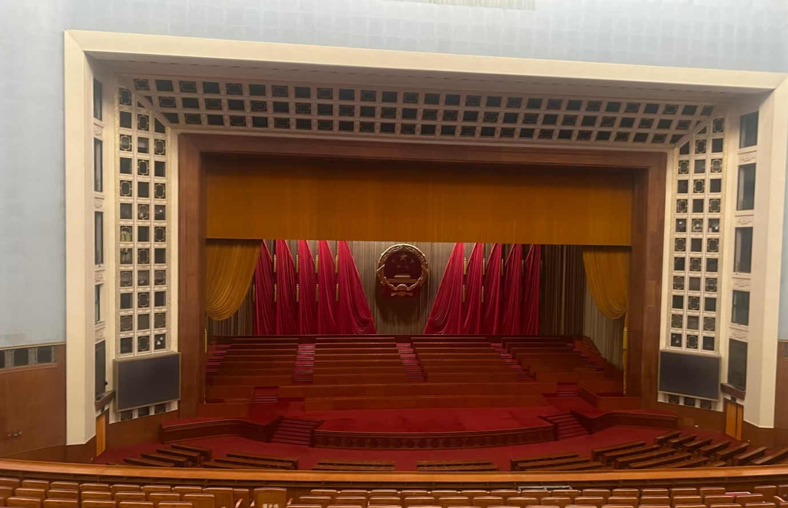
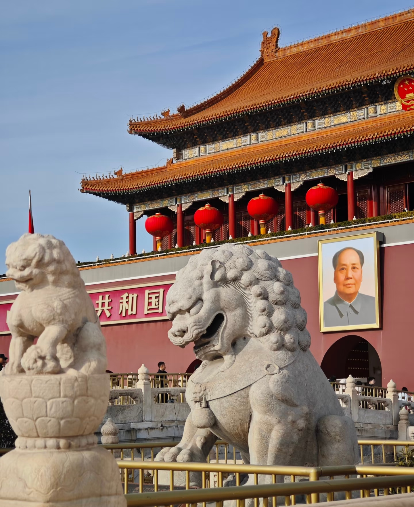
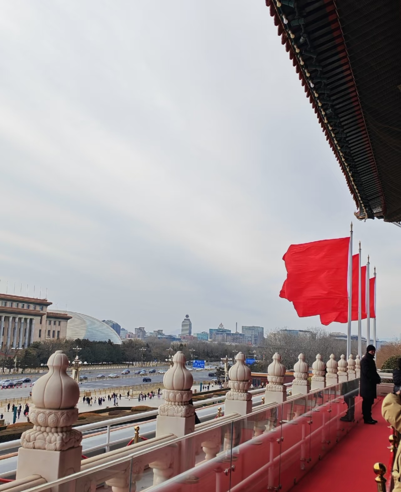
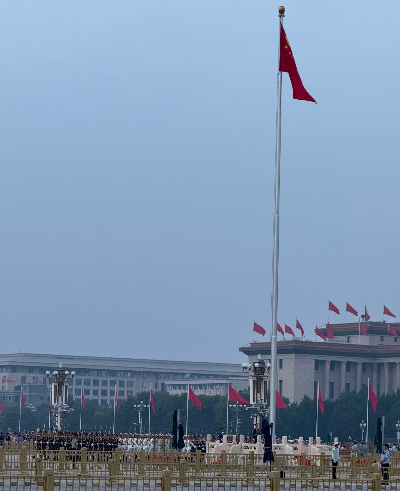
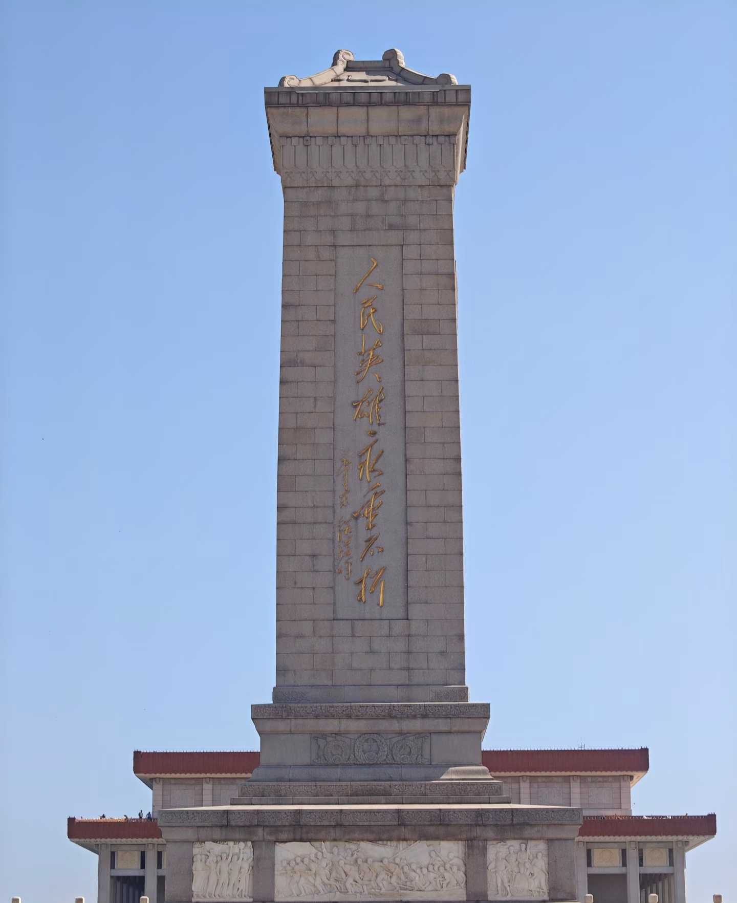
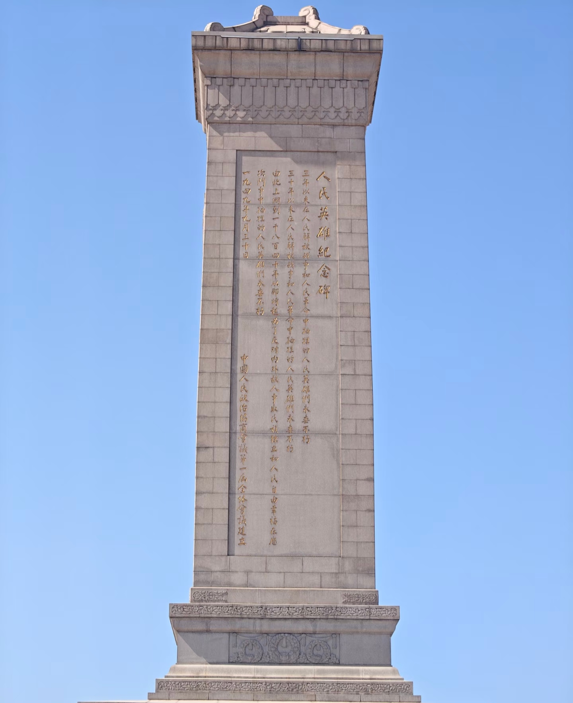
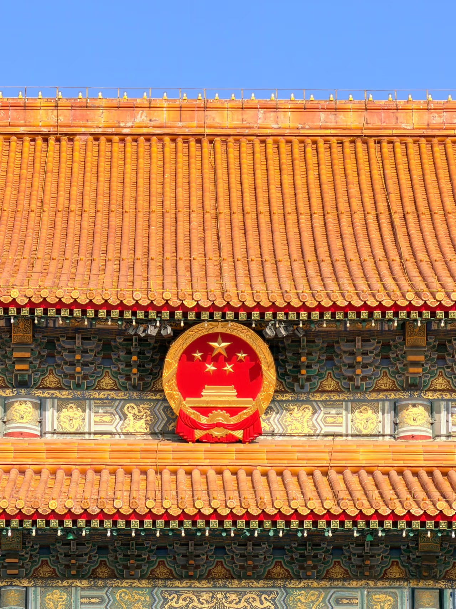

人民英雄纪念碑
人民英雄纪念碑位于天安门广场中心，是中华人民共和国建立后第一个由国家兴建的大型纪念性工程。纪念碑通高37.94米，碑身正面镌刻毛泽东题写的"人民英雄永垂不朽"八个鎏金大字，背面碑文由毛泽东起草、周恩来书写。碑座四周镶嵌十幅巨型浮雕，生动再现了从鸦片战争到解放战争中国人民反帝反封建的革命斗争历程。

历史时间线
从奠基到落成，人民英雄纪念碑见证了新中国成立初期的豪迈与庄严。
纪念碑奠基
中国人民政治协商会议第一届全体会议决定，在首都北京天安门广场建立人民英雄纪念碑，以纪念在人民解放战争和人民革命中牺牲的人民英雄。毛泽东亲自为纪念碑奠基。

正式动工
1952年8月1日，人民英雄纪念碑正式动工兴建。工程采用全国征集方案的方式，汇集了建筑、雕塑、绘画、书法等多领域专家的智慧，体现了新中国对革命先烈纪念事业的高度重视。

落成揭幕
1958年5月1日，人民英雄纪念碑落成揭幕，成为天安门广场的核心标志性建筑。碑身挺拔庄严，与天安门城楼遥相呼应，共同构成了新中国国家礼仪空间的重要象征。


碑身浮雕与铭文
碑身正面镌刻毛泽东题写的"人民英雄永垂不朽"八个鎏金大字，背面碑文由毛泽东起草、周恩来书写。碑座四周镶嵌十幅巨型浮雕，生动再现了从鸦片战争到解放战争中国人民反帝反封建的革命斗争历程。



青年实践感悟
站在人民英雄纪念碑前，仰望那八个鎏金大字，我仿佛听见了历史的回响。从纪念碑奠基到落成，九年光阴凝聚着全国人民对革命先烈的无限敬仰。碑座上的每一幅浮雕，都是一段用鲜血写就的历史；正面的每一个字，都承载着亿万人民对英雄的永恒怀念。作为新时代青年，我们不仅要铭记历史，更要传承英雄精神，把对先烈的缅怀转化为奋斗的动力，在实现中华民族伟大复兴的征程中贡献青春力量。